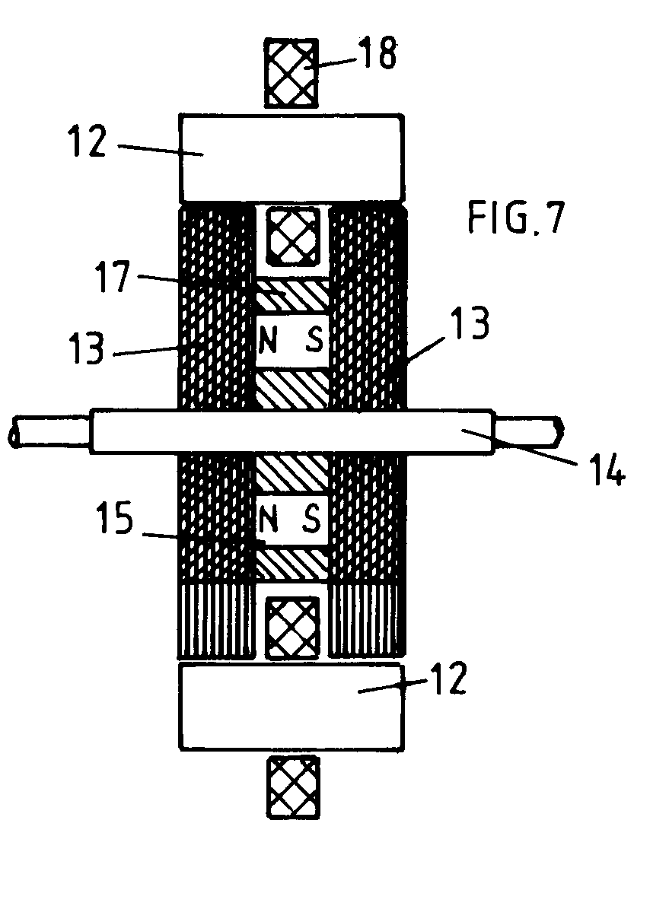
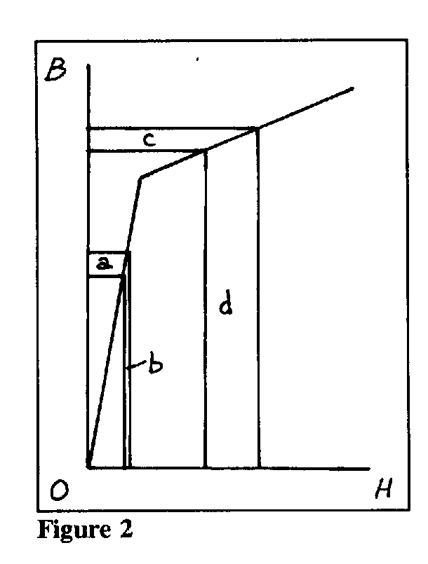

<HTML>

<HEAD>
<TITLE>LECTURE NO. 8</TITLE>
</HEAD>
<H2 ALIGN=center>LECTURE NO. 8</H2>
<H3 ALIGN=center>THE ADAMS-ASPDEN MOTOR PATENT</H3>
<H5 ALIGN=center>Copyright, Harold Aspden, 1996</H5>
<BODY>
<BLOCKQUOTE><I>This Lecture is an article that appeared on pp. 50-53 of the September-October, 1996 issue of 'Infinite Energy'.  It has been edited in a very minor way at the point where there is reference to the research of W.G. Tifft concerning the quantization of galactic red shifts, the subject of Tutorial No. 10 in these Web pages and Lecture No. 6.</I></BLOCKQUOTE>
<p><H4 ALIGN=left>INTRODUCTION</H4>
	I first heard of Robert Adams and his motor at a mountain retreat north of Denver, Colorado during the days just before a New Energy Symposium. That was in April 1993.  A benefactor interested in knowing the truths about `free energy' and its potential for solving the world's pollution problems had funded the expenses of the invited speakers and the preliminary `think tank' event at that retreat.  My talk would be about magnetism and the aether as an energy source, but our `think tank' groups each had an allocated theme. We were expected to point the finger at the best candidate for onward investigation, from the vague information and reports we had about discoveries and claims pertaining to the new energy world.</p>
<p>	Yes, there were several to choose from, machines involving magnets and solid-state devices such as that devised by Hans Coler, dating from the World War II era, or the then-current activity of Floyd Sweet (now deceased).  In fact, one of our team, a colleague from U.K., had visited Sweet just prior to that Colorado meeting.  However, specific information as to how to build any of these devices was not available, nor was there any acceptable theoretical account of their operation on which we could recommend action.</p> 
<p>	Fortunately, however, someone had brought with him information publicized by the NEXUS magazine and a Manual, available from Nexus, describing a motor devised by a New Zealander named Robert Adams.  `Over-Unity' performance was claimed and enough was disclosed as a blue print for replication of the machine.  We did not really understand how it could operate quite as well as Adams had indicated, but we were convinced that `over-unity' was in prospect.  Accordingly, as it seemed easy to build a motor such as Adams described, our group settled for the recommendation that the Adams motor should be looked into and somehow constructed to verify its performance.</p>
<p>	That was how I first came to know about the Adams motor.</p>
<P><H4 ALIGN=left>COLLABORATION WITH ADAMS</H4>
	At that time such experimental work that I had pursued on the `free energy' theme was basically on solid-state magnetic systems and, in collaborating with a Scotsman, Scott Strachan, I had been involved with the invention of a thermoelectric device which was extremely efficient at converting low grade heat into electricity.  Undoubtedly it defied the Second Law of Thermodynamics, but that point was not stressed in those early days.  That invention had proved problematic because the devices built worked for a while by repeated operation for half an hour or so at a time, day after day, for several months, but then came the inevitable progressive weakening in conversion efficiency, ending with a defunct piece of equipment.</P>
<P>
	The story on that is told between pages 124 and 128 of Jeane Manning's excellent book `The Coming Energy Revolution - The Search for Free Energy', ISBN 0-89529-713-2 published in 1996 by Avery Publishing Group, Garden City Park, New York.</P>
<P>
	I was distracted from that thermoelectric venture when I took a more practical interest in the magnetic reluctance motor, inspired by what we had heard about Robert Adams.  I was to be distracted again towards the end of 1995 when the Correa <I>`Pulsed Abnormal Glow Discharge'</I> invention came to my attention, with its 5:1 over-unity feature clearly demonstrated.  And now, as year-end 1996 approaches, I am destined to be distracted again, this time by having discovered myself why those thermoelectric devices mentioned above had failed.  The remedy is easy as the problem does not involve deterioration. It is as if a bistable system has flipped to its off-state and just needs to be flipped back into its on-state, provided, that is, one knows what to flip!</P>
</P>
	Now, to come to the point about my collaboration with Robert Adams, I am writing these words on October 28th, 1996 and in a week from now the granted patent I have procured jointly with Robert Adams will become available from the British Patent Office in its issued form.  It is Patent No. GB 2,282,708.  I plan, in these pages, to introduce my own motor research and relate it to that patent and explain my connection with Adams.</P>
<P>
	I am also mindful that Adams, now recognized by an honorary doctorate from the Open International University of Sri Lanka, to become Dr. Robert George Adams, has recently published an addendum to the Adams Motor Manual entitled: <I>`The Revelation of the Century'</I> and has included in that work some of my written contributions.</P>
<P>
	The immediate focus of my attention, however, is a rather critical letter communication authored by Michio Kaku and sent to a programme producer of a radio station based in New York.  It was dated May 20th 1996, but it is only now that I have become aware of this communication from Robert Adams' new book.</P>
<P>
	Adams need not have included Kaku's letter in his book, but he did and I commend him for it.  Apart from saying that Robert Adams was either the next Einstein and Newton rolled into one or a crackpot, he made these two comments:
<BLOCKQUOTE>&quot;Apparently, he (Adams) wants to extract energy from the ether by using rotating magnets, thereby violating the first law of thermodynamics (conservation of mass and energy).  This is an ancient idea, going back centuries and was most popular in the 1880s, but was disproved by the Michelson-Morley experiment and Einstein's relativity theory.  Ether, which was supposed to be a magical substance which pervaded the universe, has never been measured in our laboratories.&quot;</P>
<P>&quot;The proof is in the pudding.  He (Adams) has to show a blueprint of his machines, show that they in fact generate energy, and show with a few equations how his theory works.  Lacking a blueprint, a mathematical theory, and, say, video tapes of his motors generating energy from nothing, I cannot say with 100% certainty that he is wrong.  (Only 99.99%)&quot;</BLOCKQUOTE></P>
<P>
	Now, having just had an `over-unity' motor patent granted in which I share inventorship with Adams, I will assume that those Kaku remarks are addressed also in my direction and reply accordingly, point by point.</P>
<P>
	Firstly, as a educational exercise, the extraction of energy from the ether does not violate the first law of thermodynamics.  By definition or simple semantics, if you extract energy from something and move it from that something A into something else B, the energy remains conserved overall.  The first law of thermodynamics dates from before the time when the transmutation of mass and energy was recognized as the stellar power source by Sir James Jeans (1904).  A critic might say, however, as Jeans himself did in his 1928 book `EOS', that Isaac Newton knew of photosynthesis by which radiant energy transmitted through space is captured by plants and converted into matter, which stores energy by creating a combustible product.  The transmutability of energy and mass was not discovered, nor was it first suggested, by Einstein.  He was too late.</P>
<P>
	Secondly, the existence of the ether was not disproved by Einstein.  Indeed, Einstein has not proved anything, nor has he disproved anything.  One simply cannot flaunt Einstein's theory around as a reason for rejecting the prospect of an `over-unity' motor.  On the contrary, ask yourself why there are plans to test Einstein's theory at a cost of $500,000,000 dollars by launching Gravity Probe B in 1999.  If Einstein's theory is right, why are there any doubts warranting expenditure on that scale?</P>
<P>
	Thirdly, Kaku says the ether has never been measured in our laboratories and that its existence was disproved by the Michelson-Morley Experiment.  The fact is that Michelson did not perform the experiment to test or refute the existence of the ether.  He lived another 44 years after performing that experiment and believed in the ether to his dying day.  He was trying to sense the Earth's motion through the ether, but, since standing waves developed by mirror reflection had not been discovered when the experiment was planned, he had not allowed for that to affect the result observed.  In fact, the ether energy stored in those standing waves, being trapped in the mirror system, makes the wave motion appear to be locked to the frame of reference of the mirrors, and not the ether as expected.  The ether certainly was detected in the laboratory when Michelson found he could detect the Earth's rotation relative to that non-rotating ether by his light wave interference experiments jointly with Gale in 1925.  It was detected some years before that by Sagnac in France and is detected in modern navigation technology by the ring laser gyro.  How can the speed of a laser beam travelling around a closed path inside an optical instrument detect rotation of that instrument if the beam is not keeping a fixed speed relative to something inside that instrument that does not share its rotation?  That something is the ether!  No amount of book learning or mathematics can avoid that simple truth, and even though the word `ether' is seen as something `magical' it is that something that delivers `free energy', once we have decoded the combination of the magnetic lock which restrains its release.  Note also that the ether reveals its existence when we have rotation and we have rotation in the Adams motor.</P>
<P>
	Fourthly, as to Kaku's pudding, which comes first, the chicken or the egg, the blueprint and the working machine, or the theory and the equations?  Well, though we have no answer to this question of priority, we know there are chickens and we know there are eggs, so it really does not matter which comes first.  Certainly, it seems, that in order for Kaku to decide whether `free energy' is possible, albeit with only 0.01% chance, there has to be a theory, a machine and an ether.</P>
<P>
	It is for this very reason that I have made special effort during 1996 to publish my book <I>`Aether Science Papers'</I> as a forerunner of the Energy Science Report describing my own `free energy' motor research.  This Report No. 9 in the series is entitled <I>`Over-Unity Motor Design'</I> and its date of publication is November 6th 1996, two days ahead of the first disclosure of details of my machine at a New Energy symposium held in Rotterdam in The Netherlands.</P>
<P>
	The formal electrical engineering theory explaining the motor operation in tapping `free energy' is contained in a few pages in that Report.  The motor design is described and a photograph of the machine is included.  Moreover there is an outline `blueprint' that indicates the design of the multi-megawatt versions of the machine.  However, as to the ether, or `aether', to use my normal terminology, describing that in full detail needs more than a few pages for scientific proof and, as Kaku well realizes, the wisdom needed exceeds the talents of even an Einstein or a Newton.</P>
<P>
<H4 ALIGN=left>ABOUT THE AETHER</H4>
	I will digress here, just for a moment, before getting back to Robert Adams and the subject of the Adams-Aspden patent.  My reason is another comment made by Kaku in that quoted communication.  He asserted as a conclusion:<br>
<BLOCKQUOTE>&quot;Inventors want to solicit money from investors, so I have a moral obligation to say exactly what I think about issues that, at some point, may hurt people.&quot;</BLOCKQUOTE>
	Now that is a very poor reason for attacking someone's lifelong efforts to probe the secrets of science with a view to advancing both knowledge and technology beneficial to mankind.  The facts of life are that it is investors who want to solicit money by making profit from the creative endeavour of inventors.  Invariably, inventors get hurt anyway, without some well-meaning individual doing his moral duty by hurting the inventor more by unwarranted criticism.  Is it really a moral obligation to preach the gospel of Einstein's theory in contending that investors should steer clear of Robert Adams, when his only thought is to have his efforts recognized?</P>
<P> 
	Of course, by the nature of things, the free-lance inventor can go adrift in a technical sense and then, if ensnared by those investors, he can be carried off into obscurity by a tidal wave of turmoil.  Meanwhile the orthodox scientific establishment stands by and watches, mildly amused at the futile efforts of the free-lance inventor who ventures beyond the level of gimmicks for use in the household and garden.  That is the way it is.</P>
<P> 
	As to my book <I>`Aether Science Papers'</I> it shows how so much of vital importance, explained by neither Einstein's theory nor quantum theory, has a straightforward answer.  You see, just as Robert Adams in New Zealand and I in England sit poles apart on this our Earth, yet we are governed by the same laws of physics and subject to the same constants of physics. Body Earth is our common rotating frame of reference, but body Earth does not explain why those physical constants are, so far we know, universal.  We take that for granted, just as our forebears took for granted the fact that they all inhabited the same aether.  Our modernist society and its Einstein enthusiasts tell us there is no aether and so, Robert, you are on your own and only God can tell you why your experiments would work as well in England as they do in New Zealand!</P>
<P>
	You might then wonder why scientists at the U.S. Bureau of Standards, at the National Physical Laboratory in England and at the equivalent CSIRO National Measurement Laboratory in Australia bother to measure the same physical constants to very high precision. Give or take a fraction of a part in a million attributable to experimental error, they always come out the same.  Surely, that is because the aether spreads through all those locations and has the same structure everywhere.  What do I mean by structure?  Well, you need to look up the paper in Physics Letters, 41A, 423-424 (1972), entitled <I>'Aether Theory and the Fine Structure Constant'</I> to find the answer.  That paper emerged from the Australian CSIRO laboratory just mentioned. It shows how alpha, the most basic dimensionless constant in quantum theory, is derived by aether theory to give:<br>
<center>(alpha)<SUP>-1</SUP> = 108(pi)(8/N)<SUP>1/6</SUP></center>
and how N is found to have the lowest cell energy if N is 1843.  This gives (alpha)<SUP>-1</SUP> as 137.0359, correct to part per million precision in comparison with its measurement at any of those laboratories.  If there were no aether then you might as well think of a number and try that, though it would be your ghost that makes that effort because you would no longer exist.</P>
<P>
	Of course, there will be the Kakus of this world who say that the above formula is mere number play, contrived to fit known results.  Well, that may be true for Einstein's '1,2,3' theory, but it certainly is untrue for the aether theory.  You see, all Einstein did by the disguised mathematics of his General Theory of Relativity was to say (1) that the spectral red shift was the same as that evident by use of Newtonian theory, given that energy gravitates, (2) that light beams grazing past stars are deflected by twice the amount expected from Newtonian theory and (3) that planets describe orbits around the sun as if the planet's motion-dependent attraction is three times stronger than the value predicted by classical theory.  It is so easy to contrive a theory for a 2 and a 3 factor. A German schoolmaster Paul Gerber had, in 1898, 18 years ahead of Einstein, presented a theory for the '3' factor, based on the speed-of-light propagation of gravity across space, but that was not mentioned by Einstein.  The factor of 3 arises because the energy transfer between sun and planet is not confined to a pencil thin line drawn between sun and planet, but rather fans out as it transfers to the aether field and then converges on its target after taking more time over the longer route.</P>
<P>
	Einstein's theory is sterile.  It offers no physical insight into the truths of the role played by the aether. It cannot explain that 137.0359 that governs quantum theory and, even on its own territory, it cannot explain the dimensionless constant involving G, the constant of gravity, nor, indeed, can it explain the unifying link between electrodynamics and gravitation!</P>
<P>
	So, Robert out there in New Zealand, take note that you are in a part of the universe where the aether has the energy state corresponding to N having the value 1843!  Note that I first discovered the formula above long ago in the 1950s using an engineer's slide rule, backed up by logarithmic tables for higher precision.</P>
<P>
	Take further note that, years after that 1972 paper was published, a famous astronomer in USA (Tifft), discovered that distant galaxies closely paired or in small groups exhibited differences in red shift.  The differences were always multiples of 72.5 km/s in relation to the speed of light.  Explaining this is a complete mystery.  Why should Planck's radiation constant be different from one galaxy to the next?  Well, if you, the reader, were to study my aether theory (as by reading the Tutorial Notes and Lecture No. 6 in these Web pages), you could work out that, since aether energy density throughout space has to be uniform on a universal scale, the microwave emission frequency of a radiating atom will vary in proportion to N<SUP>1/9</SUP>.</P>
<P>
 	Now take 1843 as the base value of N and decrease it in steps of 4 as you look for higher energy per unit cell states in different galactic regions. It recovers in steps of 1, but since two electron-positron pairs are involved in the decrementing phase, that 4-step feature is what is seen. You will find that the result is the 72.5 km/s observed by Tifft.  Check that by calculating 4c/9N as N decreases from 1843 to 1828, c being the speed of light.  Check the Tifft paper to verify what I say: W.G. Tifft, Astronomical Journal, 211, 31-46 (1977). Refer to Lecture No. 6 and see how the more recent evidence bears out the intermediate steps giving the 18.1 km/s intervals. You will see in that paper just referenced Tifft's comment that he could find no evidence of gravitational interaction between those adjacent galaxies!  So, what has happened to Einstein's theory.  It requires universal gravitation with each of you being an individual observer at the centre of your own universe.  I would rather believe in the aether, knowing that there is proof of its reality, and devote my efforts to tapping some of its store of energy to safeguard the future of mankind from unnecessary pollution.</P>
<P>
<H4 ALIGN=left>THE ADAMS MOTOR AND THE ADAMS-ASPDEN PATENT</H4>
	I have not built an Adams motor as described in his Manual.  I do know that when I returned to Denver in May 1994 for the New Energy Symposium there were machines on show or described in the Proceedings which purported to be Adams motors but they did not perform over-unity.  It was reported that one such machine came very close to being 100% efficient.  Adams did not attend that meeting.  However, in the intervening year I had struck up a contact with Adams.  I found he was under the impression that such machines are unpatentable and I had skills in the patent field as well as knowledge about the physics governing the operation of motors and magnetism generally. In fact, I already had a granted US patent for a motor designed for over-unity operation, but never built [US Patent 4,975,608]. Adams had possession of motors which he claimed had the over-unity performance.  I had, at the Denver 1993 meeting, declared my belief that over-unity motors were possible and supported the plan to explore the Adams machine.</P>
<P>
	My distant association with Adams resulted in an exchange of technical information and the proposal to adapt the design of his motor in a novel way.  His motor had open-ended magnetic stators and magnets in a single plane forming radial arms.  The invention we jointly devised placed the magnets axially parallel with the rotor shaft, fitted two sets of toothed rotor pieces and made the stators into bridging yokes.  The resulting configuration was of the form shown in Fig. 1, taken from the patent specification that we filed in U.K.</P>

<br><center></center>
<P>	The machine has to work over-unity, if properly designed, because the magnetic flux switching assures that much of the flux across the pole gaps is diverted, as the poles separate, so that it still links the magnetizing windings but finds a return closure path sideways from the rotor pieces and so exerts no braking action on the motor.  The magnets provide the drive torque pulling the poles into register when no current is applied to the windings.  The input of current drives the flux from the stator bridging yokes and forces it into the lateral route as the poles separate.</P>
<P>
	There can be no input of inductive power by the magnetizing winding if there is no change of net flux linkage.  It will change to some degree but, if the design were perfect, then the machine could run on negligible inductive power input.  That leaves normal resistance loss and some magnetization loss, much of which can be reduced by making the machine larger and more powerful. A small machine could prove the principle, especially if we allowed for the heat generated in the windings and explored the overall energy situation to see if we really are tapping energy from the aether.</P>
<P>
	The patent application was filed on 30th September 1993. It named myself and Adams as joint applicants and joint inventors.  It has now been granted, as already stated.  However, in May 1994, during the early days of its patent pendency, I encountered the reaction of those in Denver who had been unable to confirm `over-unity' operability of the Adams motor. I saw our patent application as offering an improved design, but there were clouds developing and Adams was facing the problem of defending his position.  As background also there was the rumour about rival Japanese motors and, as things developed, I heard of claims for a machine constructed in Hawaii that indicated over-unity operation and could, for all I knew, be quite similar to the one covered by the Adams-Aspden patent application.</P>
<P>
	I was not too sure how Robert Adams was measuring his energy input and his energy output, so I could not vouch for his performance claims and, indeed, Robert was careful about the information he did disclose.  When I heard he was adopting calorific measurement to verify the output energy, which would include heat generated in windings as well as magnetization loss, then I felt we were on track towards confirming the performance rating.  I still wonder about the measurement of input power, having regard to the pulsed form of the current, and I am not reassured by the reference to the communication from the Group Research Centre of Joseph Lucas Ltd which Robert includes in his new book <I>`The Revelation of the Century'</I>.</P>
<P>
	That said, however, going back to that 1994 period, I felt I had to take more initiative myself and so I decided to ask the U.K. Department of Trade and Industry to consider my application in a competition for an award of research funding based on a meritorious invention proposal. I offered something new, based on a new patent application, and backed by the patent cover I already had from my U.K. patent corresponding to the US patent already mentioned.  In August 1994, though I was 66 years of age, I won that award and had 75% of research costs covered by the U.K. government.  In the event that funding carried my motor research through to year-end 1995.</P>
<P>
	I did not build the specific form of machine shown in Fig. 1, but instead constructed a motor that was designed to contain the magnetic flux more effectively within what became a single all-embracing magnetizing winding enclosing the whole motor.  This is the basis of my own initiative on the 'over-unity' machine and, as the U.K. patent specification on this new machine is to be published early in December 1996, I am now releasing information by publication on November 6th of my Energy Science Report No. 9 entitled <I>'Power from Magnetism: Over-Unity Motor Design'</I>.  Figure 12 of that Report, backed by design detail, shows how the over-unity factor is determined and I reproduce that figure below as Fig. 2.</P>
<br><center></center>

Without going into full details, note that the diagram is an idealization of a B-H magnetization curve.  It has a linear B-H relationship drawn through the origin O but at high flux density levels the curve bends over as it creeps towards saturation and the slope of the curve drops. The areas a, b, c and d, respectively, represent energy density input in energizing the magnetic system. The areas a and b apply for low flux range magnetization over the lower part of the curve.  The areas c and d apply to flux changes confined to the upper region.  Areas a and c are energy inputs from the magnetizing winding, whereas c and d are energy inputs that electrical engineers never consider, because that energy is supplied by the aether.</P>
<P>
	Where does the energy go?  That is an interesting question fully explained in my Report, but the answer, simply, is that it is pooled by being shared equally between the space occupied by the ferromagnetic core and the space taken up by the air gaps in the core.  That energy in the air gaps, or pole gaps in the motor, provides the mechanical drive.</P.
<P>
	So, you can see for yourself that, if you run the motor over the lower flux density range, which is normal, then you operate at an efficiency which cannot exceed (a+b)/2a, which is 100%.  On the other hand, if the motor operates over the higher range, the efficiency can reach up to (c+d)/2c, which is very much higher than 100%!</P>
<P>
	Consider some realistic figures by putting the knee in the curve at 15,000 gauss and assuming that the incremental B/H ratio is 1000 over the lower range but only 50 over the upper range.  Operate the stator core of the motor up to a B value of 20,000.  H ranges from 15 to 115 over this upper range.  Work out the area c as being (15+115)x5000/2 or 325,000 and the area d as being (15,000+20,000)x100/2 or 1,750,000.  You will then see that operation close to 319% efficiency is indicated!</P>
<P>
	Be less ambitious in power output terms and run the motor over an upper range between 15,000 and 17,000 gauss, to find that area c is (15+55)x2000/2 or 70,000 and the area d is (15,000+17,000)x40/2 which is 640,000.  (c+d)/2c is then 507%!</P>
<P>
	If the aether delivers energy on loan to you and you use it to run the motor as the poles come together but refuse to give it back, then the aether has to replenish itself by taking power from its own vast pool of energy activity.  It merely ripples to find a new level of equilibrium just as the sea will recover if you take a bucket of water from it.  Eventually, that energy borrowed finds its way back to the aether as we spend it by generating heat radiation.</P>.
<P>
	If you do not believe what I say, then wait and watch the progress as those who do believe, be it Robert Adams or whoever so decides to build a magnetic reluctance motor heeding the design principles I have recorded in my Report.</P>
<P>
	As a final note I will echo one message which I have independently mentioned in my Report No. 7 (the Report used to brief the U.K. Department of Trade and Industry on my Award progress). It is that magnetic reluctance motors already being manufactured that are said to be 80% or 90% (or even 96% efficient as I now see reported on page 21 of the U.K. Institution of Mechanical Engineers 16 October 1996 issue of <I>'Professional Engineering'</I>) are already trespassing upon forbidden territory.  That level of efficiency is either a false claim or the motors are already regenerating power from heat dissipated as loss. 

<HR>
</BODY>

</HTML>
